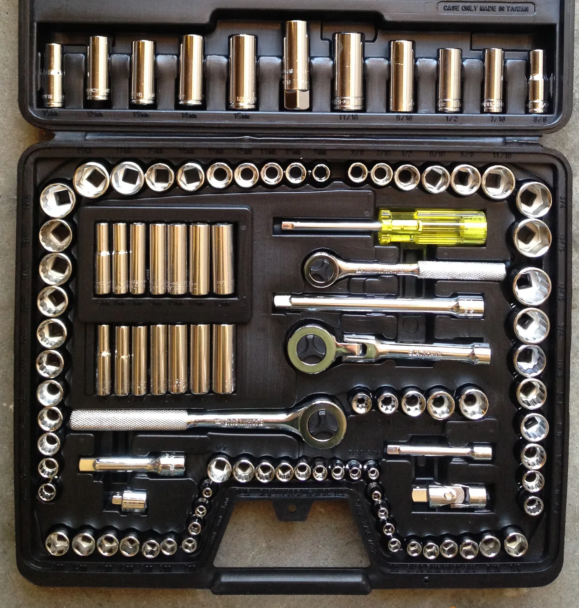

Chapter 11.10 walked through bleeding a brake line, adjusting chain slack, and replacing a fuse without once naming what those repairs actually require in a rider's hands. Every one of them needs specific tools, matched to what a motorcycle's fasteners actually are, and a basic kit built around that match does more useful work than a much larger generic set ever will.
Chapter 11.11 closed Part XI by pointing here: a diagnosis is only useful once a rider is actually equipped to act on it. This chapter starts with the tools themselves.
Metric Fasteners, Almost Universally
Nearly every motorcycle sold anywhere in the world today uses metric fasteners, regardless of where it's manufactured or sold — a genuine convenience compared to some older machines and vehicles that mixed metric and imperial hardware on the same assembly. A basic kit built around metric sockets, wrenches, and hex keys covers the overwhelming majority of fasteners a rider will actually encounter, which makes a mixed metric-and-imperial set mostly wasted weight and clutter rather than added capability.
The Core Kit: Sockets, Wrenches, and Hex Keys
A small range of socket and wrench sizes, typically running from around 8mm to 17mm, covers the great majority of fasteners on a typical motorcycle — axle nuts, engine covers, bodywork fasteners, and the caliper bolts Chapter 11.10's bleeding procedure needs access to. A set of hex keys in similarly common sizes handles fasteners a socket can't reach, particularly on fairings and smaller covers, and a couple of screwdrivers, Phillips and flathead, round out what fits in a genuinely compact kit rather than a full mechanic's rolling chest.
Nearly every motorcycle on the road uses metric fasteners, and a basic kit built specifically around that fact — rather than a generic mixed-standard set — covers the overwhelming majority of what a rider will actually need to turn.

A mechanic's socket and wrench set laid out in its case — the same range of sizes, ratchets, and extensions a basic motorcycle kit is built around, scaled down to what actually fits a compact case. Photo: J.C. Fields, CC BY-SA 3.0, via Wikimedia Commons.
Motorcycle-Specific Additions
A few items go beyond what a generic automotive kit assumes, because they answer needs specific to what this book has already covered. Chapter 6.5 established tyre pressure as the cheapest, most consequential adjustment on the entire machine, which makes an accurate tyre pressure gauge worth carrying even before a torque wrench. Chapter 11.10's brake-bleeding procedure needs a length of clear tubing and a small catch bottle, neither of which appears in most general-purpose kits. Pliers, both standard and needle-nose, handle the cotter pins, clips, and cable ends a motorcycle uses more of than most cars do.
A Common Misconception, Cleared Up Early
It's a common instinct to buy the largest tool set available, on the assumption that more sizes and more pieces mean fewer situations where the right tool is missing. A two-hundred-piece set built for general automotive work buries the dozen or so sizes a motorcycle actually uses among dozens that will likely never come out of the case, making the specific tool needed harder to find quickly rather than easier. A smaller kit, deliberately matched to metric motorcycle fasteners, is both more portable and faster to use than a much larger one built for a different kind of vehicle.
Where This Leads
Having the right tool is only half the job; using it correctly on a fastener matters just as much. Chapter 12.2 turns to torque wrenches next, and to why "tight" isn't something a hand should be trusted to judge alone.
Key Concepts to Remember
- Nearly every motorcycle uses metric fasteners, which makes a metric-focused kit far more useful than a generic mixed-standard set.
- A small range of socket, wrench, and hex-key sizes covers the great majority of fasteners on a typical motorcycle.
- A larger, generic tool set isn't automatically more useful — a smaller kit matched to a motorcycle's actual fasteners is faster to use.
Cross-References
| ← Ch. 11.10 | Described bleeding a brake line, adjusting chain slack, and replacing a fuse; this chapter names the specific tools each of those repairs actually requires. |
| ← Ch. 6.5 | Established tyre pressure as the cheapest, most consequential adjustment available; this chapter includes an accurate gauge as an essential kit item because of it. |
| → Ch. 12.2 | Covers torque wrenches and why tightness by feel alone can't be trusted. |